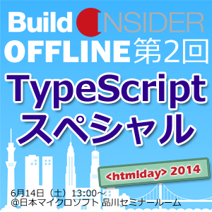

ロゴデータの使用
賛同イベントの主催者の方には、<htmlday>のロゴデータをご自由にお使いいただけます。賛同のお礼を申し上げるメールに、ロゴデータのURLが含まれておりますので、ダウンロードしてご利用ください。
今年もドドンとお祭りだ！！
開催地は日本全国！！
ー <htmlday>に参加して、日本のWebを盛り上げよう！ ー
<htmlday>とは、日本全国でWebに関するイベントを同日（6/14）に開催することで、日本のWebを一層盛り上げようという「お祭り」です。
<htmlday>で開催されるイベントは、誰でも開催することができ、誰でも参加することができます。 「Webについて考えよう！」（Think the HTML!）という想いがあれば、どんなイベントでも構いません。例えば、Webデザイン、Web制作、その他ディレクションの話でも良いですし、Webネタにした単なる飲み会でも構いません！とにかくWebに関するものであれば何でもOKです！！（昨年のhtmldayの模様はこちらから）
もしよければ<htmlday>に参加して、日本のWebを盛り上げるために、あなたのお力を貸してください！
賛同してくださったイベントには、<htmlday>特製ステッカーを差し上げます。（イベント運営者の方々には特製Tシャツもお渡しします。）
<htmlday>に参加するためには、次の2つの方法があります。
Webに関する何らかのイベントを企画してください。
いわゆる「勉強会」でも構いませんし、単なるお茶会や飲み会でも構いません！
<htmlday>に賛同してくださったイベントには、以下の様な特典を用意しています。
賛同イベントの主催者の方には、<htmlday>のロゴデータをご自由にお使いいただけます。賛同のお礼を申し上げるメールに、ロゴデータのURLが含まれておりますので、ダウンロードしてご利用ください。
以下の開催イベント一覧（随時更新中！）から、お近くのイベントにご参加ください。
もしかすると、<htmlday>特製ステッカーがもらえるかも！
お住まいのお近くにイベントがない場合は、知り合いに声をかけて、開催することをぜひ検討してみてください！
Build Insider OFFLINE： 第2回 TypeScriptスペシャル
今年は、Web開発者に大人気（Build Insiderの調査で1位）の「TypeScript」がテーマです。参加費は無料。さらに参加者全員にTypeScript 応援Tシャツをプレゼント予定です。
DIST.3 「Photoshop and me」
「職種の垣根を越える」 「特定の技術に依存しない」 「今日から現場で使える」の3つをコンセプトとして、有志が運営する非営利の勉強会です。 デザイナー、デベロッパーという区別をつけて一人一役での仕事をしていた時代は終わろうとしています。職種や技術を超えて、Web制作にまつわるあらゆることを、みんなで集まって学んでいく会を作りたいと考えています。
HTML5朝活会
都内でHTML5の講座を開催している東京アプリ・ワークショップの早朝朝活授業です。昨年に引き続き２回めの開催です。
INTER-Mediator勉強会2014-#5@htmlday
Webアプリケーションフレームワーク「INTER-Mediator」の勉強会を京都のMac DTPデザイン塾で開催します。今回は、初心者の方向けに、“きちんと”ハンズオンをいたします。MacやWindowsを持ってお集まりください。場所は、JR西大路あるいは阪急西京極です。
第25回GDG中国勉強会＠岡山（仮）
HTML5に関連した内容で普段通り勉強会をします。まだ（仮）なので何もかも未定です！